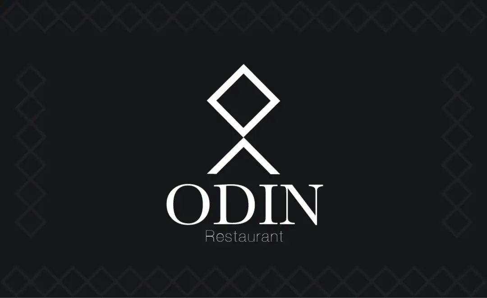
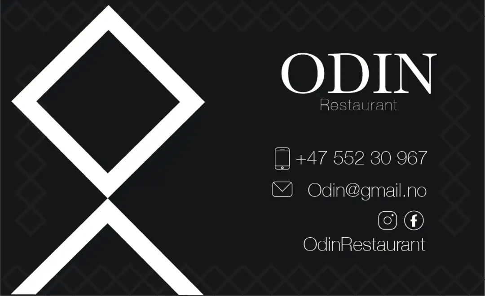

VISUAL IDENTITY
This school assignment was to create a restaurant and its visual identity. I made a restaurant that would serve traditional Norwegian food and have a sophisticated brand identity.
SOPHISTICATION ROOTED IN NORDIC TRADITION
The logo uses a modernized version of the rune for O. The typography in the logo is a seriff font called Baskerville as the primary typeface, to keep the traditional theme of the restaurant. The secondary typeface is Helvetica Neue which helps balance out the heaviness of Baskerville .



DESIGN MANUAL WEBSITE
I got tasked with making a design manual website prototype for the restaurant .